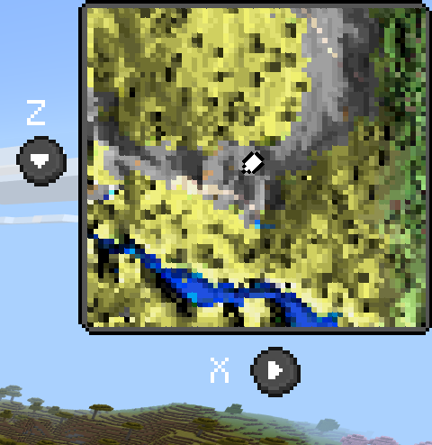
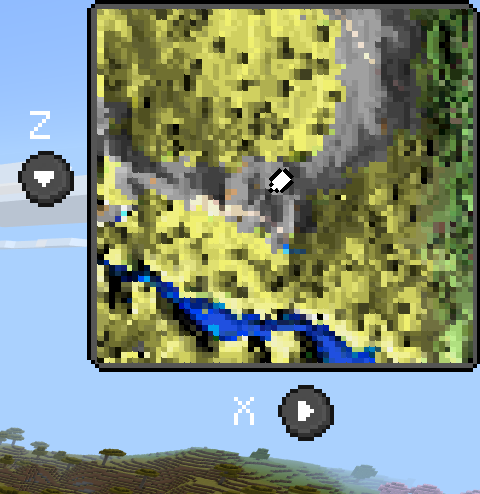

EW&M WIKI
Here you can find all the features of the addon explained in detail.
In Real Time Rendering
The minimap renders the world in real time while you explore.
Deeply Optimised
The script is light and uses minimal resources.
Single-Pass Rendering
All the rendering pipeline of getting data, processing, effects and displaying is done in a single pass.
Cache
All the explored chunks are stored in a local cache to avoid re-rendering them.
Data Compression
The data is compressed in memory to save space but at a small performance cost.
MiniMap
Displays nearby terrain with a live player locator. Supports caves, dimensions and color variations.
64x64 Display
You can adjust the block/pixel ratio (scale) in your settings to show a 384x384 blocks area.

Cave Support
The minimap can show underground caves (you can find it in the settings).
Water Depth Effect
Water is rendered with a depth effect to show underwater terrain.

Shading
The minimap has a shading effect to show the depth of cliffs.
Player Locator
In the center of the minimap you can find a player locator that shows your position and rotation.

16 Channels RGB Colors
4096 different colors make biome blending smooth and accurate.

World-Map
A full world overview that tracks explored areas.
Extremely Large Area
You can render a 2400x1080 blocks area in a single map. It can take a little bit of time to load but its worth it. Berock isnt enough advanced yet to make it load faster.

Keybinds control
You can close the map by crouching, you can navigate into the world map by holding jump and moving.
Personal Settings
Customize zoom, resolution, effects and rendering behavior to fit your device and playstyle.
World-Map Resolution
This chooses the amount of pixels to render in the world map. Higher values means more time to load but better quality.
World/Mini Map Scale
This chooses the block/pixel ratio for both maps. Higher values means more area shown but less details.
World Configuration
World-level configuration allows better control over how the map behaves in different environments.
Waypoints
Planned feature that will allow custom markers across your world map.
InGame Screenshots
Only in-game footage is shown.

 



FAQ
Does the minimap work have achievements?
Yes, but with some downsides.
Is it compatible with servers?
Most people reported that it doesn't, but a minority says that it does.
Can you make it achievement friendly?
No, beta API is needed to get other addon's blocks color.
Does this work on any device?
It does work on Pc and Mobile, but its not tested if it does on console.
Is it compatible with servers?
Most people reported that it doesn't. but a minorance says that it does.
Is it possible to have buttons to interact with the map instead of commands?
No, bedrock UI buttons cant send inputs to scripts.
Can you make it achievement friendly?
No, beta api is needed to get other addon's blocks color.
Does it work with modded blocks?
Yes, that's the reason beta api is needed.
Is it compatible with other resource packs?
Most likely no a lot of stuff of this addon require specific assets.Is multiplayer supported?
Yes it is, with some bugs becouse i didnt test it yet.